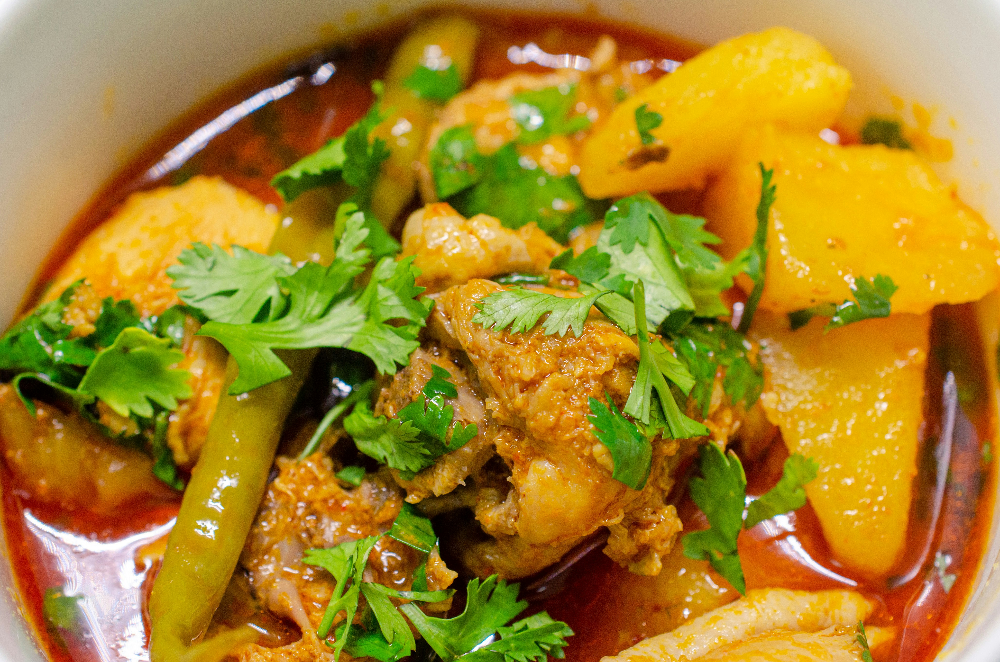

Chocolate Chip Cookies

Ingredients:
- 1 cup butter, softened
- 1 cup white sugar
- 1 cup packed brown sugar
- 2 eggs
- 1 teaspoon vanilla extract
- 3 cups all-purpose flour
- 1 teaspoon baking soda
- 2 teaspoons hot water
- 1/2 teaspoon salt
- 2 cups semisweet chocolate chips
Instructions:
- Preheat oven to 350 degrees F (175 degrees C).
- Cream together the butter, white sugar, and brown sugar until smooth.
- Beat in the eggs one at a time, then stir in the vanilla.
- Dissolve baking soda in hot water. Add to batter along with salt.
- Stir in flour and chocolate chips.
- Drop by large spoonfuls onto ungreased pans.
- Bake for about 10 minutes in the preheated oven, or until edges are nicely browned.
- Cool slightly on the pan before transferring to wire racks to cool completely.
Donuts

Ingredients:
- 2 1/4 teaspoons (1 packet) active dry yeast
- 1/4 cup warm water (110°F/45°C)
- 3/4 cup warm milk (110°F/45°C)
- 1/4 cup granulated sugar
- 1/2 teaspoon salt
- 1/4 cup unsalted butter, softened
- 1 large egg
- 3 1/2 to 4 cups all-purpose flour
- Vegetable oil, for frying
- 1/2 cup granulated sugar (for coating)
- 1 tablespoon ground cinnamon (for coating, optional)
Instructions:
- In a small bowl, dissolve yeast in warm water and let sit for 5 minutes until frothy.
- In a large mixing bowl, combine warm milk, sugar, salt, butter, egg, and 2 cups of flour.
Mix well.
- Add yeast mixture and remaining flour gradually until a soft dough forms.
- Knead the dough on a lightly floured surface until smooth and elastic, about 5 minutes.
- Place the dough in a greased bowl, cover, and let rise in a warm place until doubled in
size, about
1 hour.
- Punch down the dough and roll it out on a floured surface to 1/2-inch thickness.
- Cut dough with a donut cutter or two differently sized round cookie cutters.
- Place donuts on a lightly floured baking sheet, cover, and let rise for 30 minutes.
- Heat oil in a deep-fryer or large skillet to 350°F (175°C).
- Fry donuts until golden brown, about 1 minute per side.
- Drain on paper towels and toss in granulated sugar (and cinnamon, if desired) while still
warm.
- Serve and enjoy!
New York Style Cheesecake

Ingredients:
- 1 1/2 cups graham cracker crumbs
- 1/4 cup granulated sugar
- 1/2 cup unsalted butter, melted
- 32 oz cream cheese, softened
- 1 1/4 cups granulated sugar
- 3 tablespoons all-purpose flour
- 4 large eggs
- 1/2 cup sour cream
- 1/2 cup heavy cream
- 1 tablespoon vanilla extract
Instructions:
- Preheat oven to 325°F (160°C). Grease and line the bottom of a 9-inch springform pan.
- In a mixing bowl, combine graham cracker crumbs, sugar, and melted butter. Press mixture into the
bottom of the prepared pan.
- In a large bowl, beat cream cheese, sugar, and flour until smooth and creamy.
- Add eggs one at a time, beating well after each addition.
- Stir in sour cream, heavy cream, and vanilla extract until well combined.
- Pour batter over the crust in the pan and smooth the top with a spatula.
- Bake in preheated oven for 60-70 minutes, or until the center is set and the edges are lightly
golden.
- Turn off the oven and leave the cheesecake inside with the door closed for 1 hour to cool slowly.
- Remove from oven and refrigerate for at least 4 hours or overnight before serving.
Spaghetti Carbonara

Ingredients:
- 200g spaghetti
- 100g pancetta or guanciale
- 2 large eggs
- 50g Pecorino Romano cheese, grated
- 50g Parmesan cheese, grated
- 2 cloves garlic, minced
- Black pepper, freshly ground
Instructions:
- Cook spaghetti in boiling salted water until al dente.
- Fry pancetta or guanciale until golden and crispy, then add garlic and cook until fragrant.
- In a bowl, whisk together eggs, Pecorino Romano cheese, and Parmesan cheese.
- Drain spaghetti and immediately add it to the pancetta mixture, tossing to coat.
- Remove from heat and quickly stir in the egg and cheese mixture until creamy.
- Season with black pepper and serve immediately.
Palak Paneer

Ingredients:
- 200g paneer, cubed
- 2 cups spinach leaves, washed and chopped
- 1 onion, finely chopped
- 2 tomatoes, pureed
- 1 tablespoon ginger-garlic paste
- 1 green chili, chopped (optional)
- 1 teaspoon cumin seeds
- 1 teaspoon garam masala
- 1/2 teaspoon turmeric powder
- 1/2 teaspoon red chili powder
- 1/4 cup cream
- 1 tablespoon butter or ghee
- Salt to taste
Instructions:
- Heat butter or ghee in a pan and add cumin seeds.
- Add chopped onion and sauté until golden brown.
- Stir in ginger-garlic paste and chopped green chili.
- Add tomato puree and cook until oil separates.
- Add turmeric, red chili powder, and garam masala. Mix well.
- Add chopped spinach and cook until wilted.
- Add paneer cubes and cream. Simmer for a few minutes.
- Adjust seasoning and serve hot with rice or naan.
Aloo Gobi

Ingredients:
- 2 potatoes, peeled and cubed
- 1 cauliflower, cut into florets
- 2 tablespoons oil
- 1 teaspoon cumin seeds
- 1 onion, finely chopped
- 2 tomatoes, chopped
- 1 teaspoon ginger paste
- 1 teaspoon garlic paste
- 1 teaspoon turmeric powder
- 1 teaspoon coriander powder
- 1/2 teaspoon red chili powder
- Salt to taste
- Fresh coriander leaves for garnish
Instructions:
- Heat oil in a pan and add cumin seeds. Let them splutter.
- Add chopped onion and sauté until golden brown.
- Stir in ginger and garlic paste, then add tomatoes and cook until soft.
- Add turmeric, coriander, chili powder, and salt. Mix well.
- Add potatoes and cauliflower florets. Mix until coated with the spices.
- Cover and cook on low heat until potatoes and cauliflower are tender.
- Garnish with fresh coriander leaves and serve hot with rice or roti.